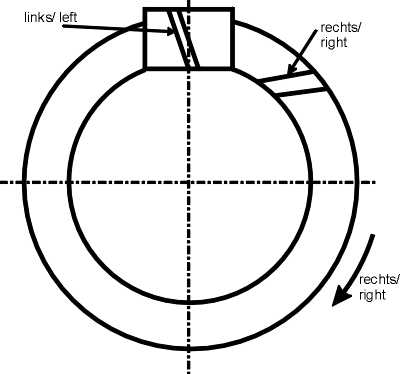

|
|
|


功率、扭矩和速度
单击功率输入字段（用于扭矩）旁的尺寸按钮，计算在保持预定义的最低安全系数水平（见"安全系数"章）时适当的功率（扭矩）。单击转速输入字段旁的加号按钮，按窗口中指定的方式输入面齿轮的旋转方向（见图 17.6）。

图 17.6：面齿轮上的螺旋角：右旋；小齿轮上的螺旋角：左旋；旋转方向：向右
English Original
Power, torque and speed
Click the Sizing button next to the power input field (for torque) to calculate the power (torque) appropriate to maintain a predefined minimum level of safety (see chapter Safety factors). Click the Plus button next to the Speed input field to enter the direction of rotation of the face gear as specified in the window (see Figure 17.6).
Figure 17.6: Helix angle on a face gear: right; helix angle on the pinion: left; direction of rotation: to the right